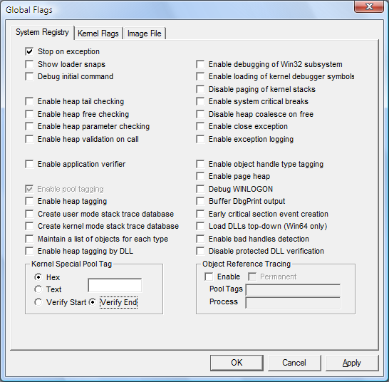

System-wide registry settings affect all processes running on Windows. They are saved in the registry and remain effective until you change them.
 To set and clear system-wide registry flags
To set and clear system-wide registry flags
-
Click the System Registry tab.
The following screen shot shows the System Registry tab in Windows Vista.

-
Set or clear a flag by selecting or clearing the check box associated with the flag.
-
When you have selected or cleared all of the flags that you want, click Apply.
-
Restart Windows to make the changes effective.